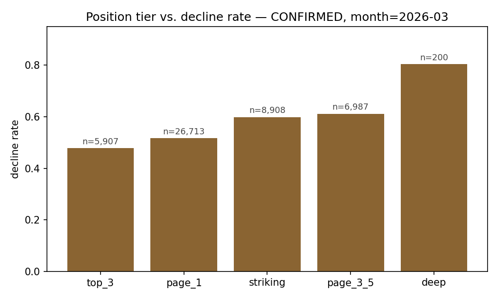
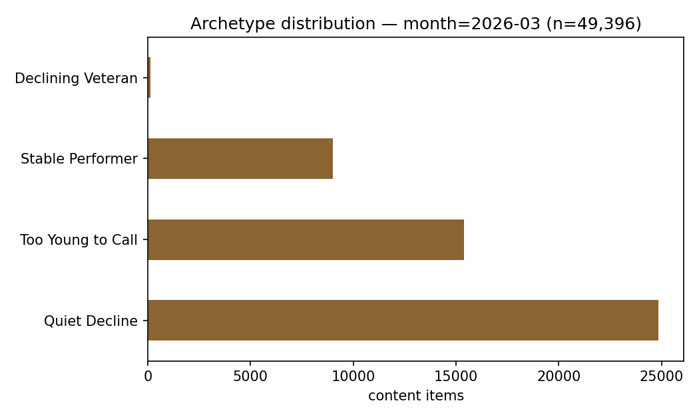

Abstract. Content teams routinely triage pages for refresh using rules of thumb — "old content is stale content" chief among them — but rarely check whether those rules hold against real performance data. Using one month of production search data (49,396 content items, 35 clients) from the FlyRank ML Internship warehouse, I trained a Random Forest to rank pages by likelihood of within-month click decline, validated under a client-grouped split against a majority-class baseline and Logistic Regression, and separately audited every candidate signal against the actual data. The model modestly beat the baseline on accuracy (61.5% vs. 57.5%) but tied Logistic Regression on Precision@20 (0.90 for both) — the metric that matches how a ranked review queue actually gets used — while the signal audit found that content age, the assumption behind the industry-standard "stale content" refresh flag, showed no relationship to decline this month, whereas search-ranking position did, cleanly. The output is a ranked, reason-coded shortlist for human review, not an automated action, scoped explicitly to what this evidence supports and no further.
A content team with fifty pages flagged for review and one hour to spend needs an order, not a list. Most refresh workflows supply that order using a handful of assumed-obvious signals — content age near the top of the list, on the theory that older pages are more likely stale. That assumption is rarely checked against the team's own data before it's acted on.
This paper asks two questions at once: which content is actually worth reviewing first, using a model validated the way a skeptical reader would want it validated, and do the signals commonly assumed to matter actually hold up when checked directly. The second question turned out to matter as much as the first.
Release: FlyRank ML Internship warehouse, distributed via Hugging Face (FlyRank/internship-warehouse). Tables: fact_content_daily_performance (the month=2026-03 partition), left-joined to dim_content for static metadata (creation date, keyword-level search-volume estimate).
Window: the full mid-panel month of March 2026. The panel's sealed final month is deliberately excluded from every stage of this work — it is the natural outcome window for any past-to-future label, and using it during development would mean testing against the future it's meant to validate against.
Scope after filtering: 49,396 content items across 35 clients, restricted to items with at least 100 search impressions that month — a real-demand floor set from information available at scoring time.
Excluded, and why: raw click counts are never used as a model feature — they are the direct ingredient of the label itself (Section 3). All client and content identifiers are pseudonymous hashes; no client name, URL, or raw search query appears anywhere in this work or its source notebooks.
is_declining is a within-month proxy: clicks in the second half of March compared against the first half. It is directional and can be noisy for low-traffic items — it is not a confirmed business outcome, and this paper does not treat it as one.
Three honest, leakage-checked features: gsc_impressions (month total), gsc_avg_position (month average rank), and content_age_days (static, from creation date). All three are knowable at scoring time and independent of how the label itself is constructed.
Raw clicks were deliberately tested as a feature and rejected: including them pushed model accuracy toward a near-perfect, meaningless number — the textbook symptom of a label-derived feature, not a real predictive signal.
A majority-class rate and a Logistic Regression on the same honest feature set, both evaluated on the identical split as the final model — never quoted from a different run or a different partition.
GroupShuffleSplit keyed on client, not a random row split: rows from the same client never appear in both train and test, which prevents the model from learning a client's identity instead of a pattern that generalizes to a client it has never seen.
Three separate checks: (1) the deliberate label-derived-feature test above; (2) a full audit of every candidate signal against the label with the bucket size printed at every step (Section 4); (3) a direct re-test of the validation design itself — re-running the same model under a naive random split versus the grouped split, to check whether the grouped split's numbers could be trusted at face value (Section 6).
| Model | Accuracy | Precision | Recall | Precision@20 |
|---|---|---|---|---|
| Base rate (majority class) | 0.575 | 0.575 | 1.000 | 0.575 |
| Logistic Regression (honest features) | 0.575 | 0.576 | 0.996 | 0.900 |
| Random Forest (honest features) | 0.615 | 0.608 | 0.934 | 0.900 |
Test set: 1,213 rows, grouped by client (35 clients total, 0 client overlap between train and test).
Random Forest edges out the baseline on plain accuracy (61.5% vs. 57.5%, roughly a 7-point lift) but is exactly tied with the simpler Logistic Regression on Precision@20 — the metric that actually matches how this ranking gets used, since a reviewer works top-down through a queue rather than acting on every row. On the metric that matters most for the real use case, the added model complexity did not produce a measured advantage in this run.
Before trusting any of the features above, each was checked directly against the data — not assumed. One of these checks produced the paper's central finding.
| Signal | Test | Verdict |
|---|---|---|
| Position tier | vs. decline rate | CONFIRMED |
| Impressions (log-bucketed) | vs. decline rate | MIXED |
| External keyword-volume estimate | vs. real observed impressions | FALSE |
| Content age (staleness) | vs. decline rate | FALSE |

Content age — the assumption behind the industry-standard "stale content" refresh flag — showed no relationship to decline this month. Decline rate was flat at roughly 54% across every age bucket (under 90 days, 90–365 days, 365–730 days), each backed by a large sample (5,946–27,440 rows). This is not a data error; it directly complicates any recommendation logic that leans on age as a reason to prioritize a page, and is treated as a first-class limitation of this work, not a footnote (Section 7).
The external keyword-volume estimate fared no better: its correlation with this month's real observed impressions was effectively zero (Spearman r = −0.014). It should not be trusted as a stand-in for actual demand.
The grouped-by-client split (Section 3) is the more rigorous choice on principle — but with only 35 clients, does it actually behave more reliably in practice? The same Random Forest was re-run under a naive random row split for direct comparison.
| Split | Test rows | Test decline rate | Accuracy | Recall |
|---|---|---|---|---|
| Random row split | 12,349 | 0.542 | 0.597 | 0.772 |
| Grouped by client | 1,213 | 0.575 | 0.613 | 0.944 |
The grouped split scored higher on both accuracy and recall — the opposite of the usual pattern where a naive split inflates scores through memorization. Read honestly, this is not evidence that grouping improved the model: with only 35 clients, a 1,213-row grouped test set is small enough that which specific client(s) land in it can plausibly dominate the result on its own. The safer conclusion is that a single grouped split, at this client count, is too unstable to trust the direction of any such gap — a finding carried into the Limitations below rather than smoothed over.
Every scored item falls into one of four archetypes, built from the three validated signals:

| Archetype | Action | Reason code | n |
|---|---|---|---|
| Declining Veteran | refresh_priority | STALE_HIGH_VALUE_DECLINE | 141 |
| Quiet Decline | monitor_only | LOW_VALUE_DECLINE | 24,853 |
| Stable Performer | protect_no_action | STABLE_HIGH_VALUE | 9,005 |
| Too Young to Call | wait_and_monitor | INSUFFICIENT_SIGNAL_AGE | 15,397 |
Never automated: publishing or editing content from this queue; pruning or de-indexing based on a monitor_only label; overriding legal, compliance, or brand review. This is a decision-support shortlist for a human editor — not a work order, and not a system with permission to act on its own.
The central tension in this work: the highest-priority archetype above (Declining Veteran) uses content age ≥365 days as one of its three defining criteria — but Section 5 found no relationship between age and decline this month. The position and volume components of that archetype's logic are supported by the audit; the age component is not. A reader using these recommendations should weight that archetype accordingly rather than trusting the label at face value.
is_declining is a within-month proxy, not a confirmed outcome — a page can score as declining from one noisy week.Full pipeline, notebook-by-notebook, in the public repository:
Random seeds fixed at 42 throughout (train_test_split, GroupShuffleSplit, RandomForestClassifier) for exact re-runnability against the same data partition.